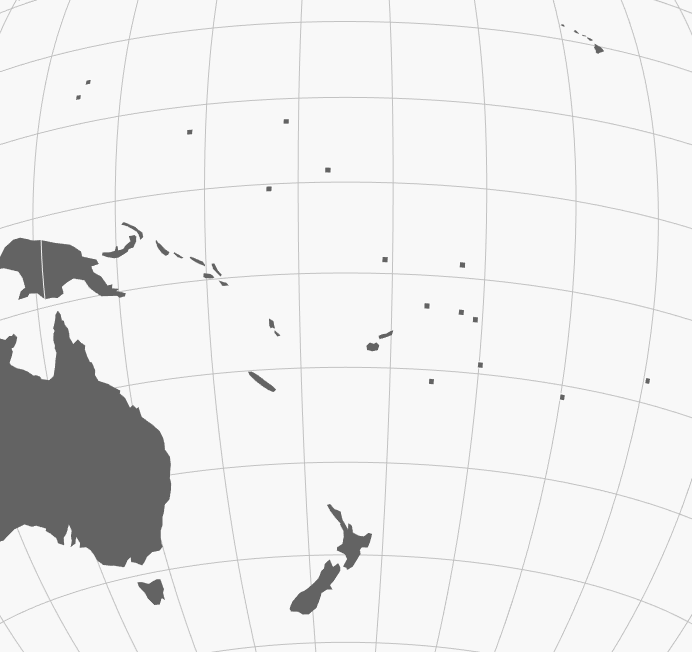

Les fonds de carte disponibles
Khartis propose une série de fonds de carte à différentes échelles. Ils sont listés dans le tableau ci-dessous et téléchargeable au format topojson. Le dictionnaire qui fait le lien avec le fonds de carte est lui aussi accessible et permet de vérifier les noms ou codes qui sont automatiquement reconnus par Khartis.
| Échelle | Niveaux | date | lien fond | lien dictionnaire |
|---|---|---|---|---|
| Monde | pays | 2016 | topojson | csv |
| Europe | pays | 2013 | topojson | csv |
| Europe | NUTS-2 | 2013 | topojson | csv |
| Europe | NUTS-3 | 2013 | topojson | csv |
| Brésil | États | 2015 | topojson | csv |
| Brésil | microrégions | 2015 | topojson | csv |
| Brésil | mésorégions | 2015 | topojson | csv |
| Canada | provinces | 2016 | topojson | csv |
| Canada | divisions de recensement | 2016 | topojson | csv |
| France | communes | 2016 | topojson | json |
| France | communes | 2017 | topojson | json |
| France | circonscriptions législatives | 2017 | topojson | csv |
| France | départements | 2016 | topojson | csv |
| France | régions | 2015 | topojson | csv |
| France | régions | 2016 | topojson | csv |
| Espagne | provinces | 2015 | topojson | csv |
| Espagne | communautés | 2015 | topojson | csv |
| États-Unis | États | 2015 | topojson | csv |
| À l’avenir d’autres fonds de carte seront intégrés à Khartis et vous pouvez aussi nous faire des suggestions. |
Sources
Monde
-
La base du fond de carte provient de Natural Earth à l’échelle 110m. Deux modifications ont ensuite été apportées :
-
révision des frontières selon une carte de la section Geospatial Information des Nations Unies
-
ajouts de polygones carrés afin de compléter les petits États et territoires qui n’étaient pas représentés (notamment aux Caraïbes et dans le Pacifique). 
-
-
Le dictionnaire est principalement une extraction de Natural Earth avec des compléments provenant de différentes sources (dans le but d’optimiser la reconnaissance automatique à l’import de données par l’utilisateur) :
-
la liste des membres des Nations Unies en plusieurs langues (anglais, arabe, chinois, espagnol, français, russe)
Europe
- Fonds de carte et dictionnaires : Eurostat - GISCO
Brésil
- Fonds de carte et dictionnaires : serveur FTP de l’Instituto Brasileiro de Geografia e Estatística (IBGE)
Canada
- Fonds de carte et dictionnaires : Statistique Canada
France
-
Fonds de carte : Open Street Map depuis data.gouv.fr
-
Communes 2016 - Geofla 2016 IGN
-
Communes 2017 - Admin Express 207 IGN
-
Circonscriptions legislatives 2017 - Toxicode et Atelier de cartographie via data.gouv.fr
-
Département 2016 - Open Street Map depuis data.gouv.fr
-
Régions 2016 - Open Street Map depuis data.gouv.fr
-
Régions 2014 - Open Street Map depuis data.gouv.fr
-
-
Dictionnaire : Wikipédia - Codes géographiques de la France et Insee - Code officiel géographique
Espagne
-
Fonds de carte : Centro National de Informacion Geografica
-
Dictionnaire :
-
Code CNIG + nom officiel : Instituto Nacional de Estadística (INE)
-
code Eurostat NUTS : Wikipédia
-
code ISO 3166-2 : Wikipédia
-
États-Unis
-
Fond de carte et dictionnaire : 2015 Cartographic Boundary File, 1:20,000,000
-
Dictionnaire (complément) : ISO 3166-2